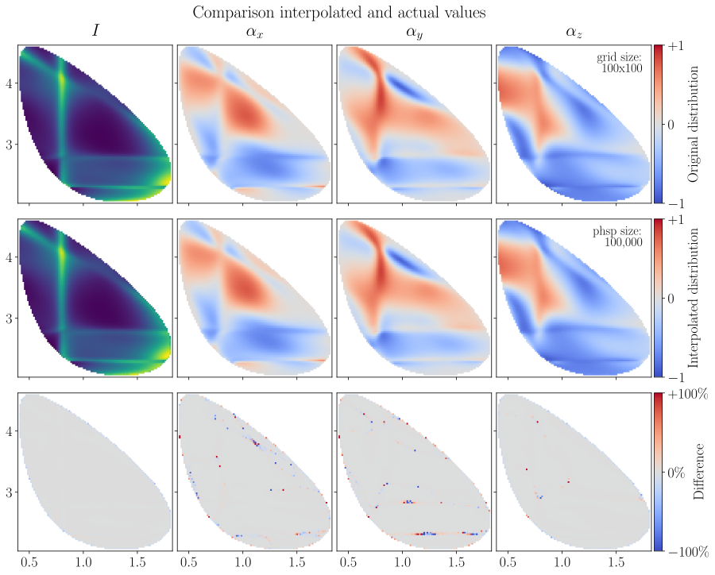

7.6. Polarimeter field serialization#
7.6.1. File size checks#
File sizes for 100x100 grid:
File type |
Size |
|---|---|
141 kB |
|
312 kB |
|
260 kB |
|
51 kB |
|
129 kB |
7.6.2. Export polarimetry grids#
Decided to use the alpha-x-arrays.json format. It can be exported with export_polarimetry_field().
os.makedirs("export", exist_ok=True)
filename = "export/polarimetry-model-0.json"
export_polarimetry_field(
sigma1=X[0],
sigma2=Y[:, 0],
intensity=actual_funcs[0](grid_sample).real,
alpha_x=actual_funcs[1](grid_sample).real,
alpha_y=actual_funcs[2](grid_sample).real,
alpha_z=actual_funcs[3](grid_sample).real,
filename=filename,
metadata={"model description": model_choice},
)
Polarimetry grid can be downloaded here: export/polarimetry-model-0.json (540 kB).
7.6.3. Import and interpolate#
The arrays in the exported JSON files can be used to create a RegularGridInterpolator for the intensity and for each components of \(\vec\alpha\).
field_data = import_polarimetry_field("export/polarimetry-model-0.json")
imported_arrays = (
field_data["intensity"],
field_data["alpha_x"],
field_data["alpha_y"],
field_data["alpha_z"],
)
interpolated_funcs = [
RegularGridInterpolator(
points=(
field_data["m^2_Kpi"],
field_data["m^2_pK"],
),
values=np.nan_to_num(z).transpose(),
method="linear",
)
for z in imported_arrays
]
This is a function that can compute an interpolated value of each of these observables for a random point on the Dalitz plane.
interpolated_funcs[1]([0.8, 3.6])
array([0.18379986])
Note that RegularGridInterpolator is already in vectorized form, so there is no need to vectorize it.
n_points = 100_000
mini_sample = generate_phasespace_sample(model.decay, n_points, seed=0)
mini_sample = transformer(mini_sample)
x = mini_sample["sigma1"]
y = mini_sample["sigma2"]
z_interpolated = [func((x, y)) for func in tqdm(interpolated_funcs, disable=NO_LOG)]
z_interpolated[0]
array([2165.82154945, 5481.04128781, 6254.96174147, ..., 1369.40657535,
4456.44114915, 7197.97782088], shape=(100000,))

Note
The interpolated values over this phase space sample have been visualized by interpolating again over a meshgrid with scipy.interpolate.griddata.
Tip
Determination of polarization shows how this interpolation method can be used to determine the polarization \(\vec{P}\) from a given intensity distribution.